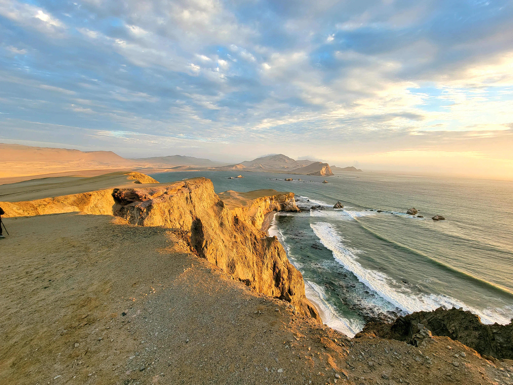

Inicio / Experiencias / Trekking
Explora los senderos del desierto y descubre la belleza natural de la región de Ica.
El trekking en Paracas es una experiencia única que te permite explorar parajes naturales impresionantes. Desde dunas de arena dorada hasta formaciones rocosas milenarias.
La región es conocida por sus "montañas de colores". El Golden Shadows Trek es una de las rutas más populares, especialmente al atardecer.
No se requiere experiencia previa. Nuestras rutas están diseñadas para diferentes niveles, siempre con guías certificados.
Formaciones geológicas únicas con tonos dorados, rojos y ocres.
El desierto se tiñe de colores intensos durante la caída del sol.
Plantas adaptadas a este ecosistema extremo y fascinante.
Escenas perfectas para la fotografía de naturaleza y aventura.
S/ 120
Por persona
* Llevar calzado cómodo y protector solar
Nuestra ruta más completa que recorre acantilados milenarios y dunas doradas al atardecer. Incluimos la visita a la Laguna Rosada como un beneficio especial.
Guía local con amplio conocimiento de la zona
Traslado incluido desde tu hotel en Paracas
Agua y snack durante la caminata
Fotos profesionales de tu experiencia
Reserva tu experiencia de trekking en Paracas ahora con total seguridad y guías expertos.
Reservar Ahora